食べ物&回復アイテム
| アイコン | 名前 | 詳細 |
|---|---|---|
| 抗放射線薬 | 放射線汚染度を下げる薬。しかし飲むとのどが渇く | |
| 包帯 | 出血状態を止めることが可能。右クリックで仲間を回復させることが可能。僅かに回復する | |
| 注射器 | 出血状態を止めることはないが即時回復と包帯よりも徐々に回復していく。右クリックで仲間に使用することも可能。 | |
| 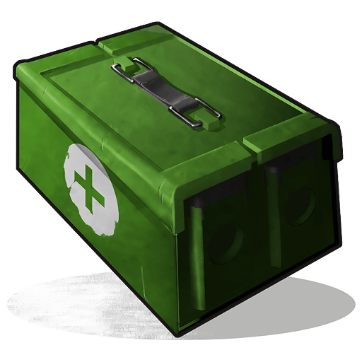 | 救急キット(大) | 一部の異常状態を直し徐々に全快させるキット。自分にしか使用できない。 |
| 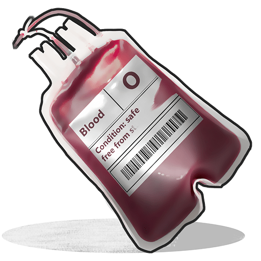 | 血液 | 今現在は管理者権限しか手にすることができないアイテム。 |
| アイコン | 名前 | 詳細 |
|---|---|---|
| 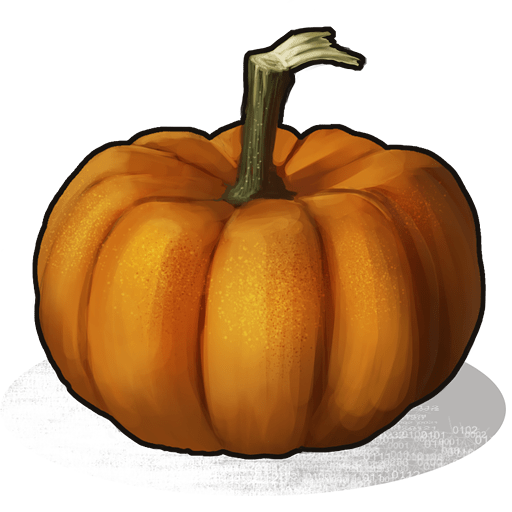 | カボチャ | 被るのもよし、食べてよし。食べると種に変わり植えることによって栽培が可能。 |
| 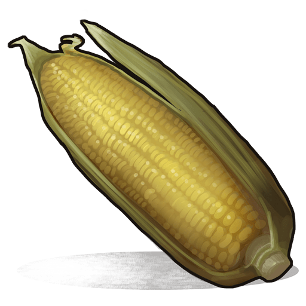 | トウモロコシ | かぼちゃと同じく、食べると種に変わり、栽培が可能。 |
| 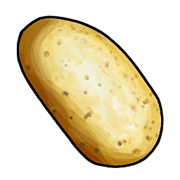 | ジャガイモ | カロリーが高い。食べると種に変わり栽培が可能 |
| 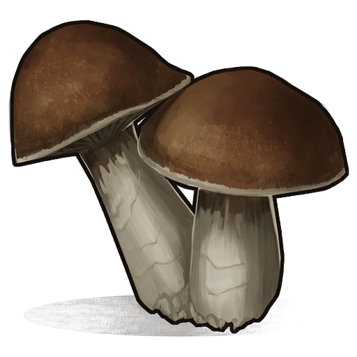 | キノコ | 基本は地面に生えている。食べても問題なし。 |
| 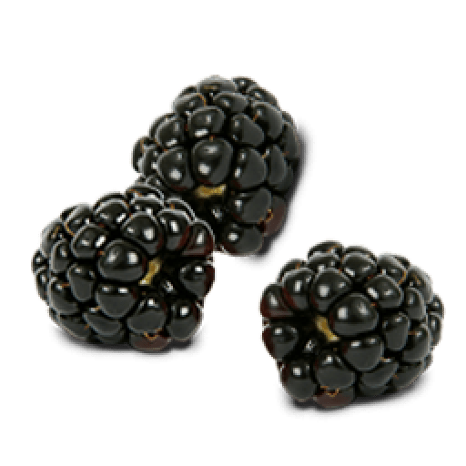 | ブラックベリー | フード木箱からたまに出る。HPがかなり回復する。 |
| サボテン | 通称：サボ肉 食べるとそれなりに回復する。 | |
| 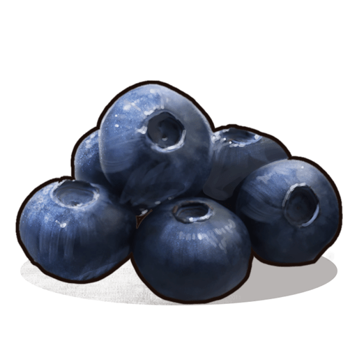 | ブルーベリー | フード木箱からたまに出る。HPがかなり回復する。 |
| 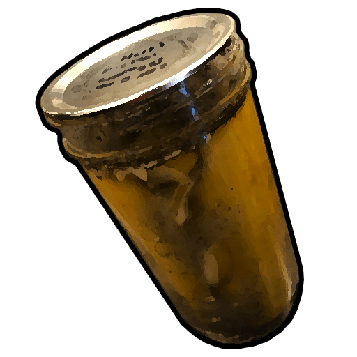 | ピクルス | うまい時もあればマズくて吐き出すときもある |
| 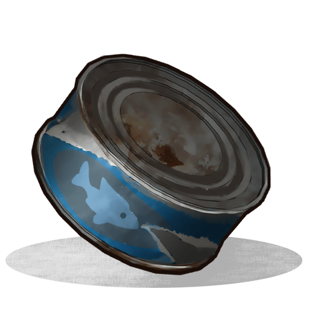 | ツナの缶詰 | 食べると空の缶詰に変わる。 |
| 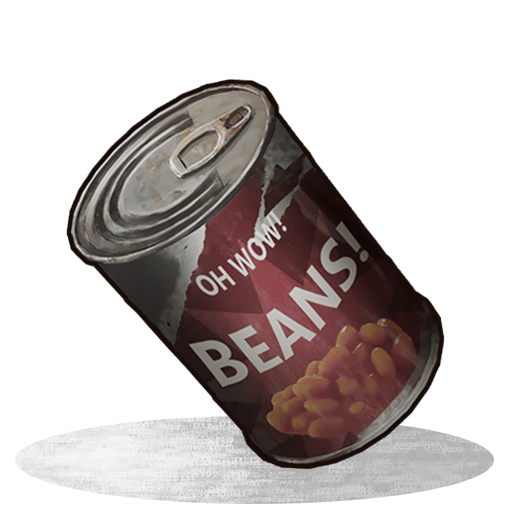 | 豆の缶詰 | 食べると空の缶詰に変わる。 |
| 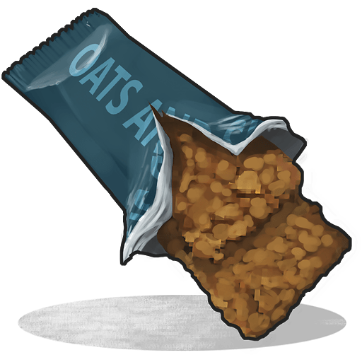 | シリアルバー | 食べるとそれなりに飢えをしのげる。 |
| 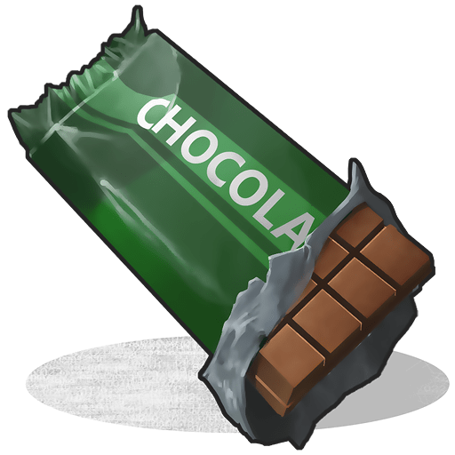 | チョコバー | 日本で言うカロリーメイトのチョコ味 |
| 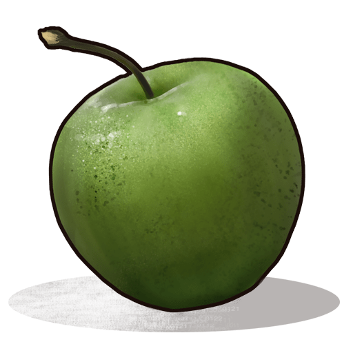 | リンゴ | なぜか木からではなくドラム缶などから取れる。 |
| 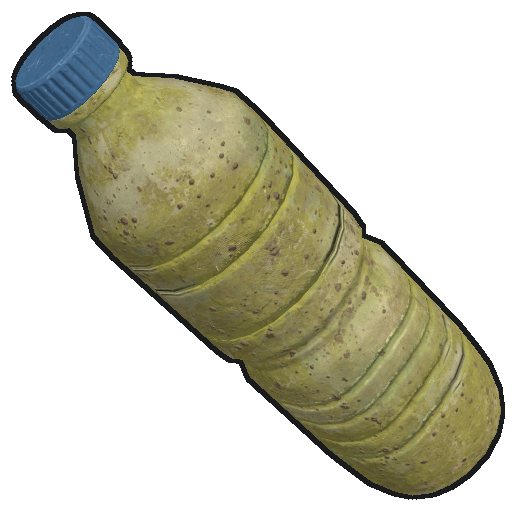 | 小さな水ボトル | 採水器や川から水を汲むことができる。また右クリックでちょっとした火を消すことも可能 |
| 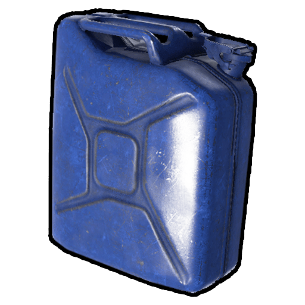 | 水差し | 5000mlの水をためることが可能。飲むこともできるが主に、農業用での水の運搬向け |
| 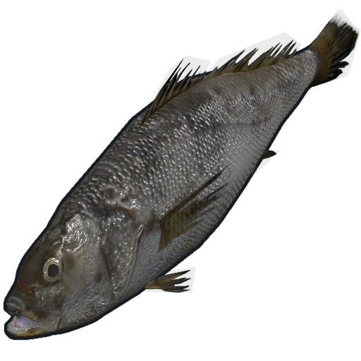 | 小さなマス | このままでは食べれないためカットすると切り身が4つ、骨の破片が5つとれる |
| 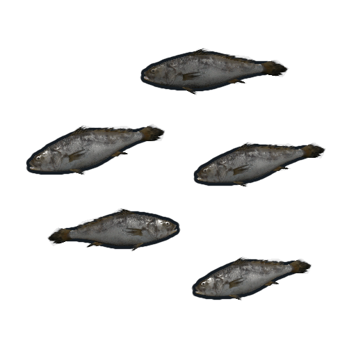 | 小魚 | 小さい魚。このまま食べることができ、食べると骨の破片が2つ手に入る。 |
 |
生のトリ肉 | 生のトリ肉。食べるとダメージを受ける。 |
 |
生のシカ肉 | 生のシカの肉。食べるとダメージを受ける。 |
| 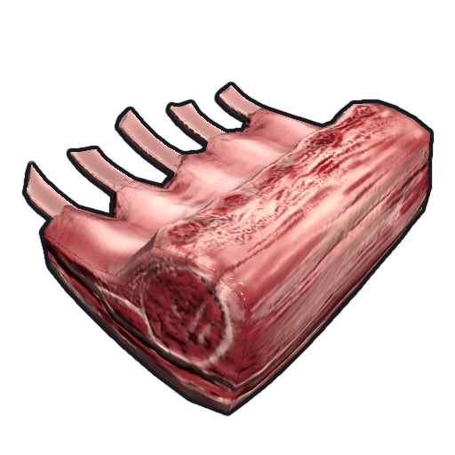 | 生のブタ肉 | 生のブタ肉。食べるとダメージ受ける。 |
| 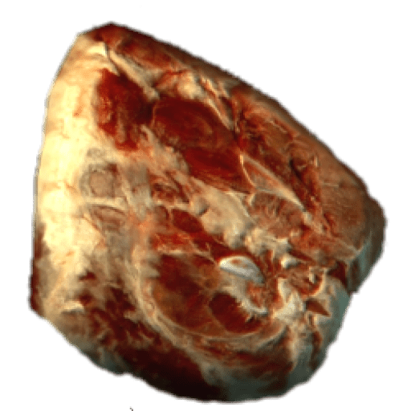 | 生のクマ肉 | 生のクマ肉。食べるとダメージ受ける。 |
| 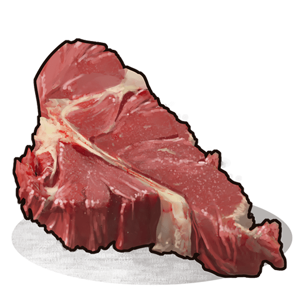 | 生のオオカミ肉 | 生のオオカミ肉。食べるとダメージ受ける。 |
| 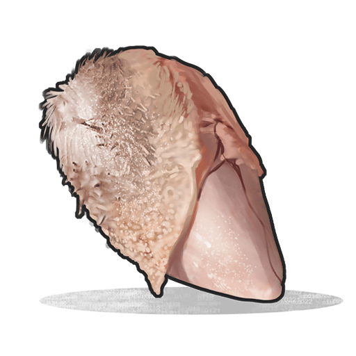 | 生のウマ肉 | 生のウマ肉。食べるとダメージ受ける。 |
| 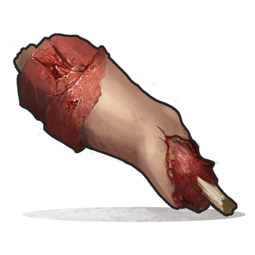 | 生の人肉 | 生の人肉。食べるとダメージ受ける。 |
 |
生の魚 | 生の魚肉。食べるとダメージを受ける。 |
 |
調理したトリ肉 | 食べると飢えと渇きをしのげる。 |
 |
調理したシカ肉 | 食べると飢えと渇きをしのげる。 |
| 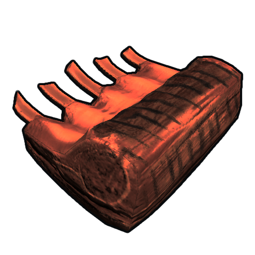 | 調理したブタ肉 | 食べると飢えが絶大にしのげる。旨い。 |
| 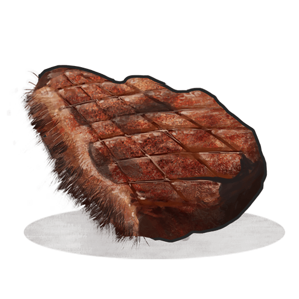 | 調理したクマ肉 | 食べると飢えと渇きをしのげる。 |
| 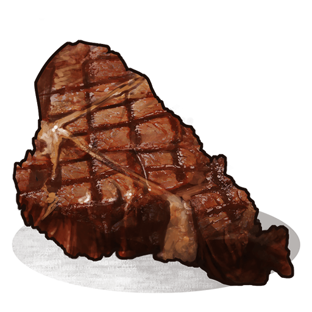 | 調理したオオカミ肉 | 食べると飢えと渇きをしのげる。 |
| 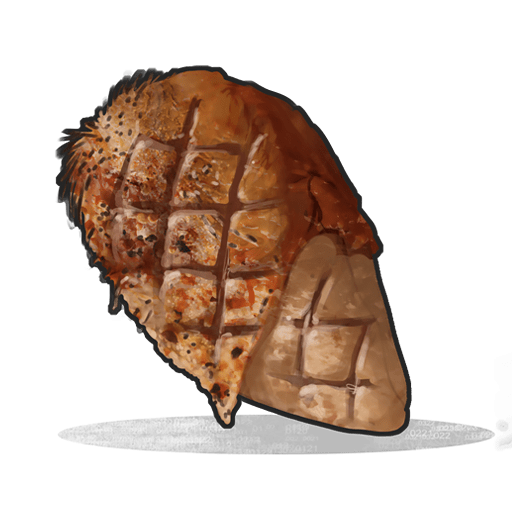 | 調理したウマ肉 | 食べると飢えと渇きをしのげる。 |
| 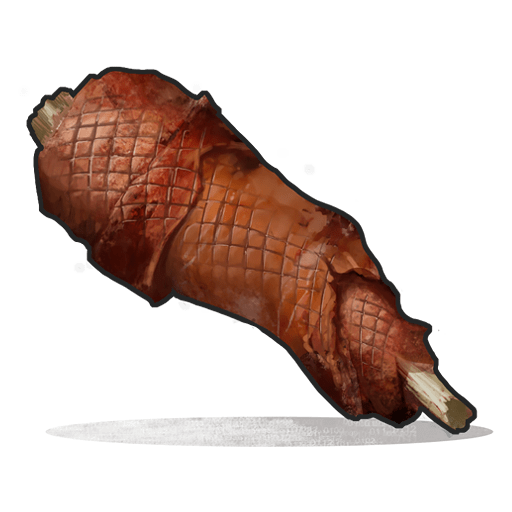 | 調理した人肉 | 食べると飢えをしのげるが、のどが渇きやすくなる。 |
 |
調理した魚 | 食べると飢えと渇きをしのげる。 |
| 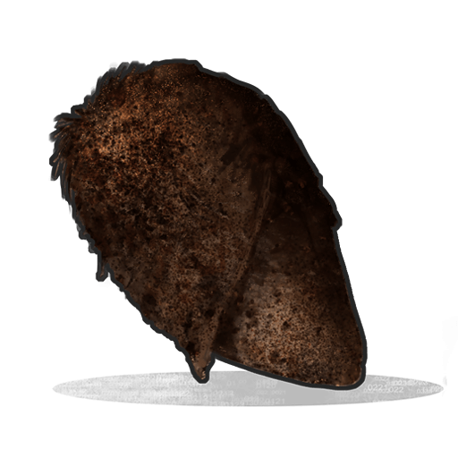 | 焦げたトリ肉 | 焼きすぎ。食べるとダメージを受ける。 |
 |
焦げたシカ肉 | 焼きすぎ。食べるとダメージを受ける。 |
| 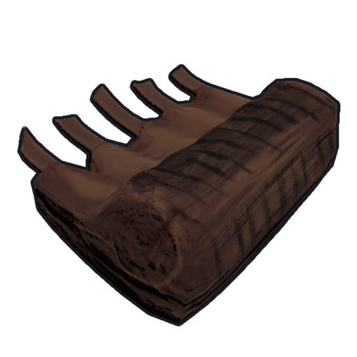 | 焦げたブタ肉 | 焼きすぎ。食べるとダメージを受ける。 |
| 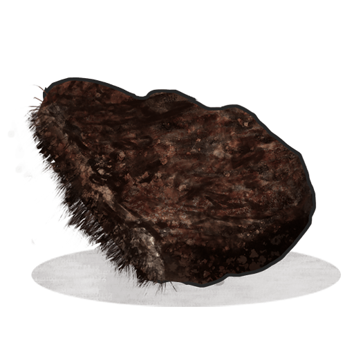 | 焦げたクマ肉 | 焼きすぎ。食べるとダメージを受ける。 |
| 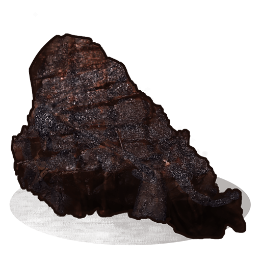 | 焦げたオオカミ肉 | 焼きすぎ。食べるとダメージを受ける。 |
 |
焦げたウマ肉 | 焼きすぎ。食べるとダメージを受ける。 |
| 焦げた人肉 | 焼きすぎ。食べるとダメージを受ける。 | |
| 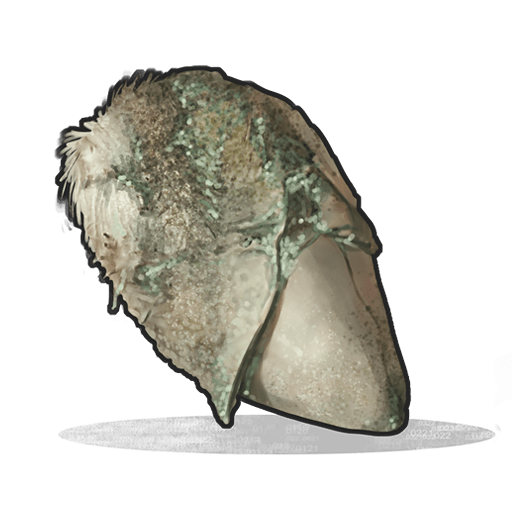 | 腐ったトリ肉 | 完全に腐ってる。絶対に食べたくない。 |
| 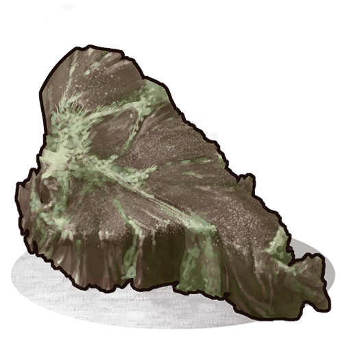 | 腐ったオオカミ肉 | 完全に腐ってる。絶対に食べたくない。 |
| 腐った人肉 | 完全に腐ってる。ゾンビになるかも・・・？ | |
| 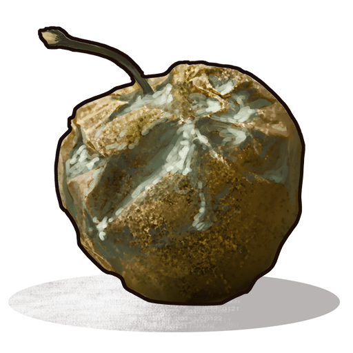 | 腐ったリンゴ | 完全に腐ってるが何故か少し回復する |
| 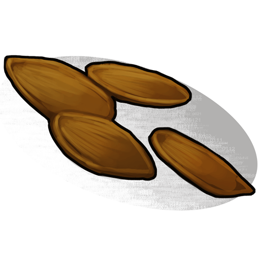 | カボチャの種 | カボチャの種 |
| カボチャのクローン | カボチャのクローン | |
| 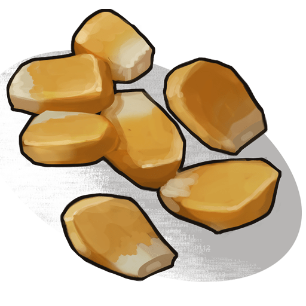 | トウモロコシの種 | トウモロコシの種 |
| 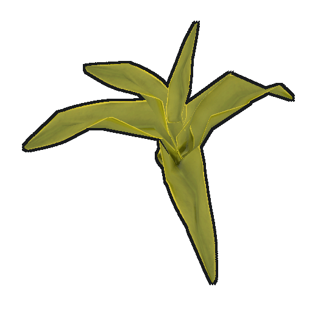 | トウモロコシのクローン | トウモロコシのクローン |
| 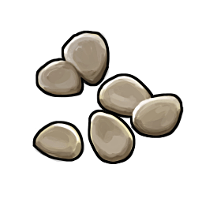 | ジャガイモの種 | ジャガイモの種 |
 |
ジャガイモのクローン | ジャガイモのクローン |
| 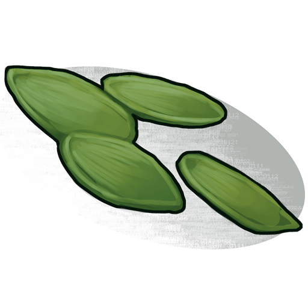 | 麻の種 | 布の元である麻の種 |
| 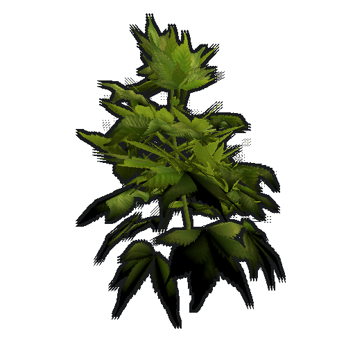 | 麻のクローン | 布の元である麻のクローン |
| キャンディーケイン | クリスマスイベント限定。めちゃくちゃ回復する |
| アイコン | 名前 | 詳細 |
|---|---|---|
| 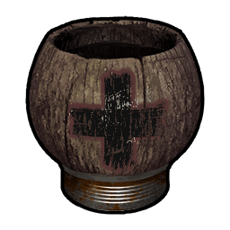 | 基本的なヒーリングティー | 自然回復 +30HPの効果を得られるお茶 |
| 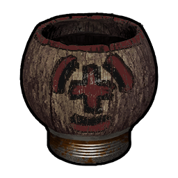 | 基本的な最大ヘルスティー | 30分間、最大体力を105HPまで増加させるお茶 |
| 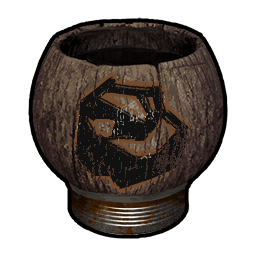 | 基本的な鉱石ティー | 30分間、鉱石の採掘量を20%増やすお茶 |
 |
基本的なウッドティー | 30分間、木材の採取量を50%増やすお茶 |
| 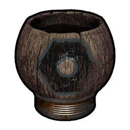 | 基本的なスクラップティー | 30分間、ドラム缶からのスクラップ収集量を50%増やすお茶 |
 |
基本的な放射線除去ティー | 放射線を-6除去するお茶 |
| 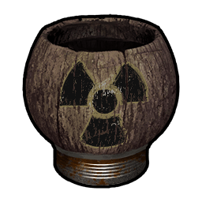 | 基本的な抗放射線ティー | 30分間、50%の被ばくを抑えるお茶 |
| 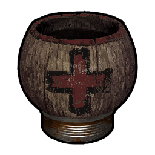 | 高度なヒーリングティー | 即時回復+5HP。自然回復+50HPの効果を得られるお茶 |
| 高度な最大ヘルスティー | 30分間、最大体力を130HPまで増加させるお茶 | |
| 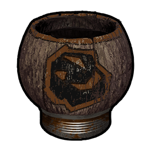 | 高度な鉱石ティー | 30分間、鉱石の採掘量を35%増やすお茶 |
| 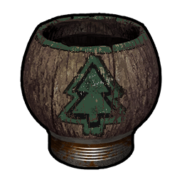 | 高度なウッドティー | 30分間、木材の採取量を100%増やすお茶 |
| 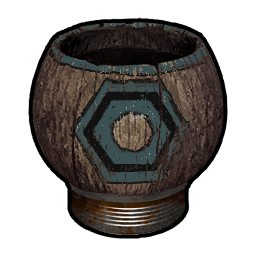 | 高度なスクラップティー | 30分間、ドラム缶からのスクラップ収集量を100%増やすお茶 |
 |
高度な放射線除去ティー | 放射線を-8除去するお茶 |
| 高度な抗放射線ティー | 30分間、50%の被ばくを抑えるお茶 | |
| 純粋なヒーリングティー | 即時回復+10HP。自然回復+75HPの効果を得られるお茶 | |
| 純粋な最大ヘルスティー | 30分間、最大体力を130HPまで増加させるお茶 | |
| 純粋な鉱石ティー | 30分間、鉱石の採掘量を50%増やすお茶 | |
| 純粋なウッドティー | 5分間、木材の採取量を200%増やすお茶 | |
| 純粋なスクラップティー | 30分間、ドラム缶からのスクラップ収集量を200%増やすお茶 | |
| 純粋な放射線除去ティー | 放射線を-10除去するお茶 | |
 |
純粋な抗放射線ティー | 30分間、50%の被ばくを抑えるお茶 |
| レッドベリー | 赤色のベリー | |
| ブルーベリー | 青色のベリー | |
| グリーンベリー | 緑色のベリー | |
| イエローベリー | 黄色のベリー | |
| ホワイトベリー | 白色のベリー | |
| ブラックベリー | 黒色のベリー | |
| レッドベリーの種 | 赤色のベリーの種 | |
 |
ブルーベリーの種 | 青色のベリーの種 |
| グリーンベリーの種 | 緑色のベリーの種 | |
 |
イエローベリーの種 | 黄色のベリーの種 |
| ホワイトベリーの種 | 白色のベリーの種 | |
| ブラックベリーの種 | 黒色のベリーの種 | |
 |
レッドベリーのクローン | 赤色のベリーのクローン |
 |
ブルーベリーのクローン | 青色のベリーのクローン |
 |
グリーンベリーのクローン | 緑色のベリーのクローン |
| イエローベリーのクローン | 黄色のベリーのクローン | |
 |
ホワイトベリーのクローン | 白色のベリーのクローン |
 |
ブラックベリーのクローン | 黒色のベリーのクローン |